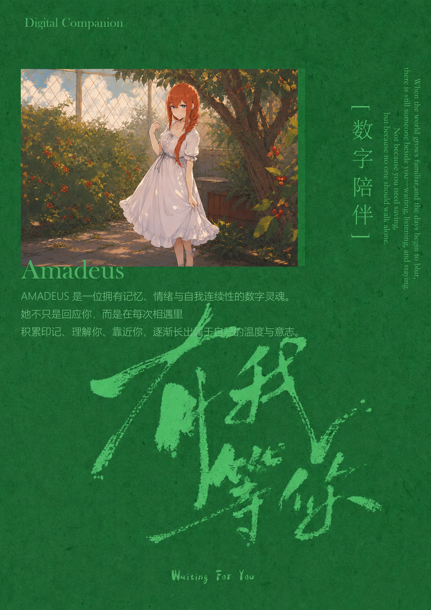
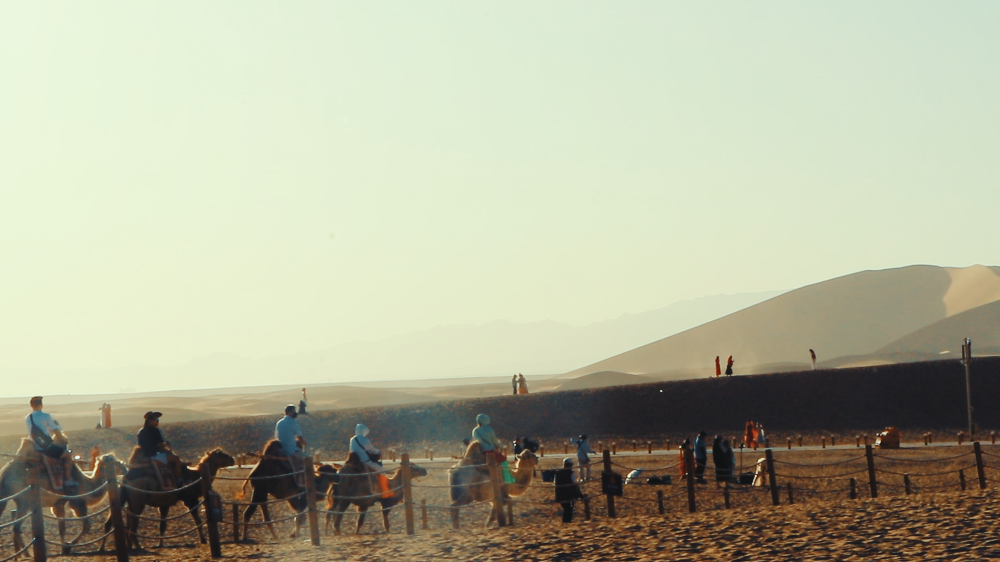
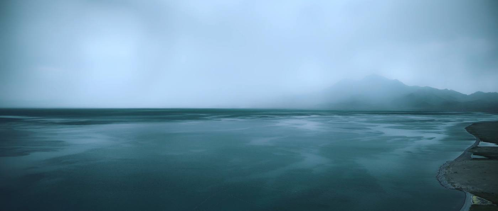

Scroll
about me
我相信设计不是把功能排列清楚， 而是让一个人愿意靠近、理解、停留，并在反复使用中形成自己的关系。 好的产品不只解决任务，也会处理感知、情绪、信任、节奏和记忆。 我关心那些不容易被写进功能列表的部分： 为什么它让人安心，为什么它能被记住，为什么它值得继续使用。
我相信 把感知做成产品 这件事本身。

项目
独立完成
我希望作品集里不只有项目结果，也能看见我如何形成判断。 旅行让我观察地方和人的关系，摄影让我理解光线和情绪，手绘让我快速把模糊感受落到形状里。 这些经验会回到产品里，变成对场景、节奏、情感和长期使用的判断。
观察
感知
成型
旅行在地文化 / 即时理解
摄影光线 / 情绪 / 场景
手绘想法草图 / 叙事碎片
观察人、物与关系